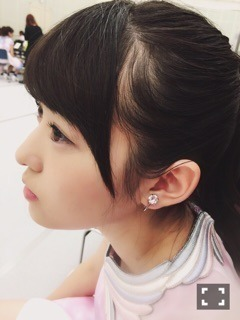
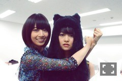
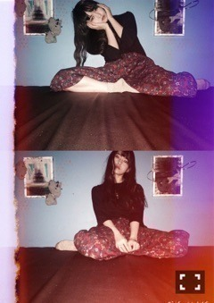

| 2015/10 24 Sat | 錆びた家具求ム。674 回目 |
昨日はMUSIC STATIONで
「今、話したい誰かがいる」
TV初披露でした＼(^o^)／
イヤリング主張。

今日は新宿芸術天国
ANNA SUIショーに
18人でサプライズ出演しました！
レッドカーペットすごい！
GirlsAwardでライブ出演しました。
久々に汗かいたライブ、楽しかった！
ファッションに触れた1日だったなあ

黒猫のかぶり物マフラー
ワンピースだけでもとても可愛い。
飛鳥たちが起用されたのを
きっかけに装苑の撮影や
今回着用してみて、
ANNA SUIがすごく好きになりました。
柄、色合い、とても好み（≧∇≦）

捕らわれたん
......
個人PV予告編公開されました。
伊藤万理華×熊坂出
『GO,GO!イサキちゃん！第1話』
夏の終わり、夏を愛するイサキが
葉っぱとカトゥと自分との葛藤します。
ぎゅっと詰まった5分間。
カトゥこと加藤諒さんと、
不健康そうで
健康そうなイサキちゃん。
雨の匂いが伝わってくる。
本編、ふたりで振り付けた
ダンスに注目してねん
熊坂さんとは8th特典
「乃木坂の4人」以来！
その後、小説の表紙を
描かせていただいたりと、
いつの間にかゆかりの深い監督。
作品は今回が初めて！
以前より、柔らかくなった
と言われました。
たしかに8枚目の時期と今じゃ
だいぶ変わったからなあ。
それに、ドキュメンタリーだった
っていうのもあるかな。
以前より素直にできたのかな、
なんかすごく悔しかった。
もっと食らいついて
いきたいと思いました！
こちらはType-Bに収録。
ユニットは通常盤です！
もうすぐリリース日！
ぜひともよろしくお願いします(^.^)

ISLAND IS ISLAND
久々遠出して展覧会へ！
駅から殺風景な場所を歩いて数分、
目的地には宝物が
ぎゅっと詰まっていました。
先日アンダーライブ行きました！
余韻に浸っています。
舞台だったステージが
違う場所かのようになっていた！
アンダーライブ、
次が武道館ということに
実感が湧かない、、
1年前は想像もしてなかったことが
今起こっているんだ。
来年は一体どうなってるんだろうか。
私はどうなっているんだろう。
何事も目標を立ててやることが
大事だと改めて思いました。
さっきスタッフさんから
聞いたんだけど、
今日のMCでまあやが私のものまね
したんだって！笑
まあや〜(*_*)(*_*)(*_*)
明日で千秋楽、
最後まで応援してます！！

帽子も含め、かぶり物好きo(^▽^)o
まりか
コメント(492)
2015/10/24 21:30